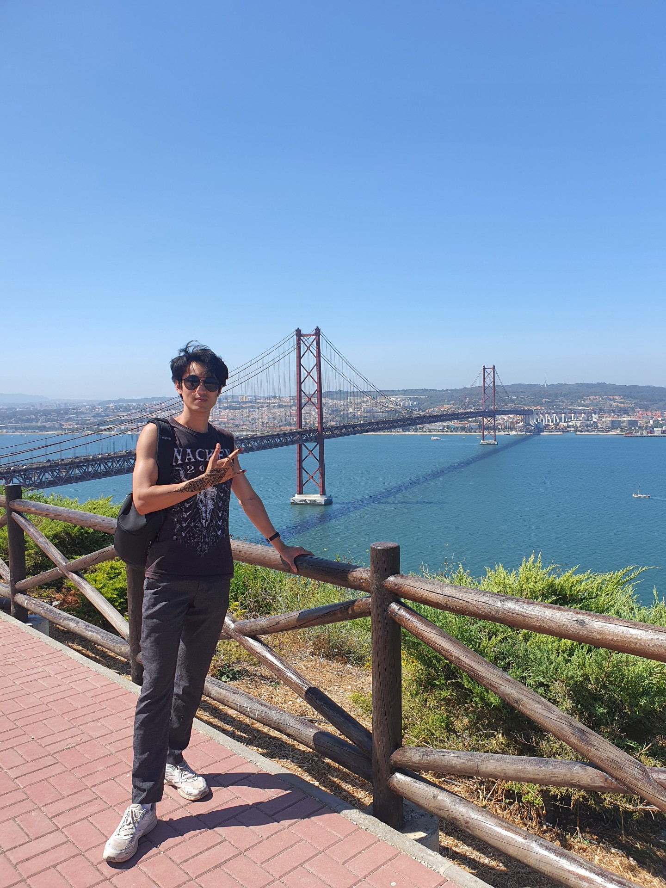
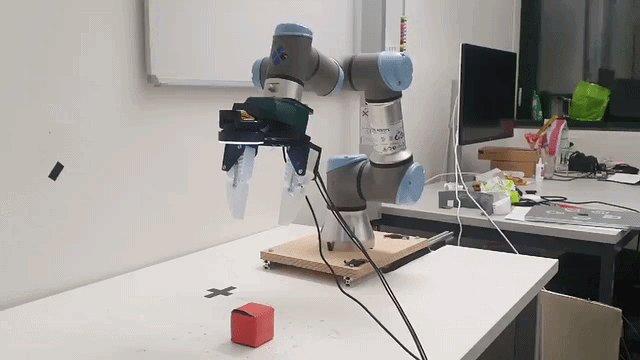
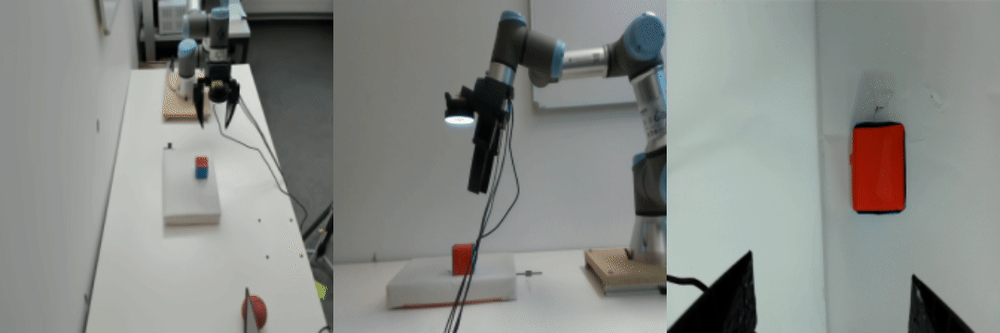
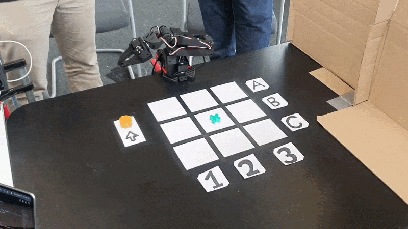

|
Jiwon You
jiwon.you at epfl dot ch
I am a master's student in Mechanical Engineering and Data Science at EPFL and a robotics intern at Switzerland Innovation Park Biel/Bienne, where I work on industrial robot manipulation for battery disassembly.
My focus is learning-based manipulation, especially sim-to-real transfer, contact-rich skills, and building robot learning systems that remain robust on real hardware.
I previously worked on manipulation and robot learning at EPFL, including with Prof. Josie Hughes at the CREATE Lab. I also did an exchange at ETH Zurich, and received my B.S. in Mechanical Engineering from Seoul National University with Summa Cum Laude.
CV /
LinkedIn /
Github
|

|
Research
My work sits between robot learning and robot systems. I have built end-to-end manipulation pipelines spanning simulation design, reinforcement learning, demonstration collection, policy distillation, deployment software, and real-robot evaluation.
Recently, I have focused on sim-to-real manipulation in IsaacLab, vision-based policy learning, and contact-rich industrial skills such as screw engagement and battery disassembly. I am especially interested in methods that improve robustness without unnecessary complexity: better task design, clearer learning pipelines, and stronger transfer from simulation to hardware.
|
Projects
|


|
Sim-to-Real Manipulation with UR3 + UMI
I built an end-to-end sim-to-real manipulation pipeline for a UR3 arm with a UMI gripper in IsaacLab, covering simulation design, policy training, demonstration collection, vision distillation, and deployment on the real robot.
The project trains reinforcement learning policies in simulation, distills them into a vision-based student policy with behavior cloning under visual randomization. On the hardware side, I developed the Python deployment stack for multithreaded robot control, Dynamixel communication, and camera streaming. The final visuomotor policy achieved zero-shot transfer of picking up randomly placed objects without explicit state estimation.
This work led to a first-author paper, Sim-to-Real Transfer for Manipulation with Zero-Shot Embodiment Augmentation via Mechanical Compliance, currently under review for IROS 2026.
|
|
|
|
Industrial Sim-to-Real Manipulation at SIPBB
At Switzerland Innovation Park Biel/Bienne, I work on industrial manipulation for battery disassembly, with a focus on contact-rich skills such as screw engagement and insertion-like behaviors.
A major part of this work is making training pipelines more robust and easier to reason about. I refine observations, rewards, and curricula for high-precision manipulation tasks, and contribute to software modularization and simulation optimization so that the overall pipeline is both faster and more transparent.
|
|
|
|
EPFL RoboCup Service Robot
Mobile manipulator platform with a three-omniwheel base, xArm, custom Dynamixel-driven gripper,
and a ZED wrist camera. Our goal was reliable pick-and-place for everyday objects.
I implemented Python APIs on top of the xArm and Dynamixel SDKs, maintained Python/ROS2 stack, and integrated a vision pipeline
for object detection and pose estimation. The robot uses classical motion planning to execute pick up. I designed and tuned grasp heuristics (approach direction, offset,
object-type-specific heuristics) and helped migrate from a legacy ROS2 stack to a modular, multi-threaded
Python system using Docker, Git, and Linux.
|
|
|

|
Zurich Robotics Hackathon — Autonomous Tic-Tac-Toe Robot
At the Zurich Robotics Hackathon 2025, our team built an autonomous tic-tac-toe robot that can play against human in real time.
The robot detects gameboard state, queries LLM for the next move, and executes it with an SO-101 arm using LeRobot VLA stack. Another LLM thread generates live TTS commentary in parallel, for an interactive crowd experience.
My main contributions were all the LLM components and general orchestration of the system(multithreading, async calls, communication between vision / LLM / VLA components, etc).
|
|
|
|
Mobile Robot Navigation with Thymio
Implementation of a full navigation stack on a Thymio mobile robot. A
camera observes the entire arena and provides a global view of the map and
obstacles, enabling high-level path planning to target locations.
I worked on fusing visual information and onboard odometry using an Extended
Kalman Filter (EKF) for robust state estimation, and on local obstacle
avoidance using the robot's infrared proximity sensors. The result is a
small-scale mobile robot that follows planned paths while reacting to nearby
obstacles in real time.
|
|
|
{kind=link}